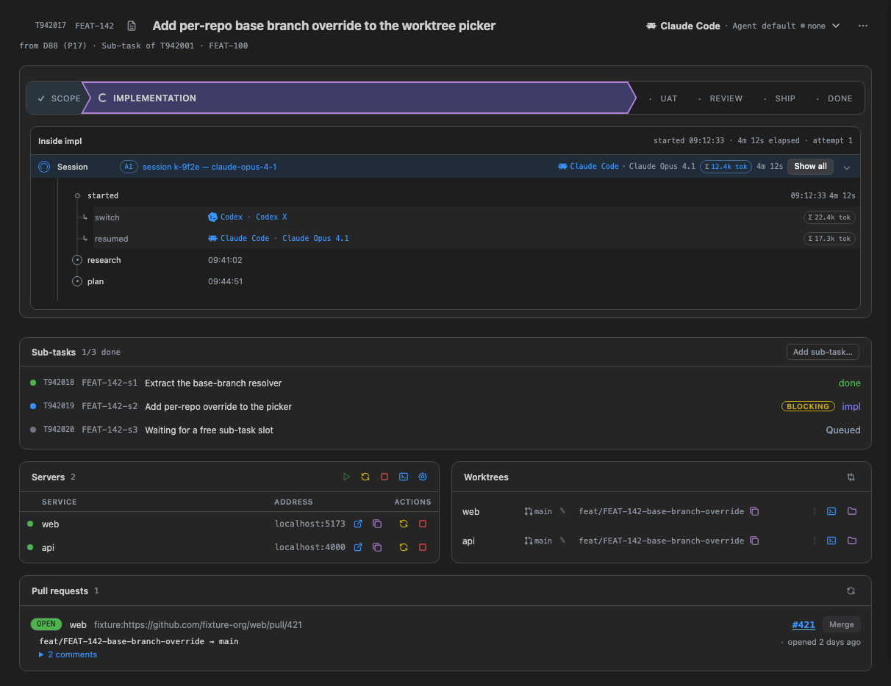
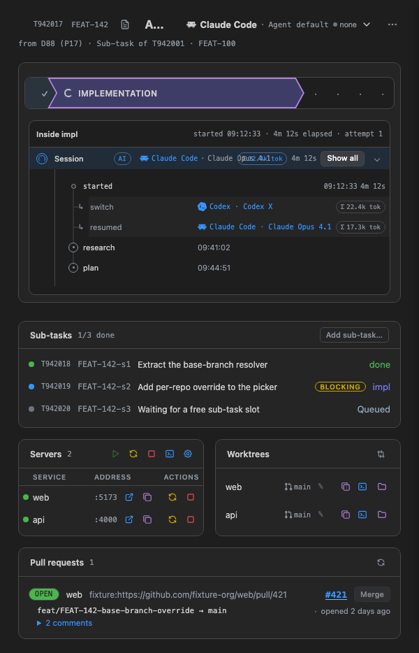
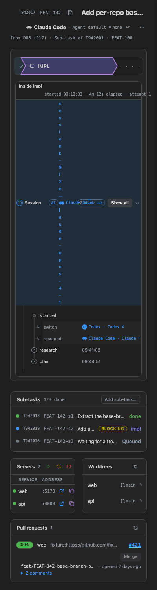
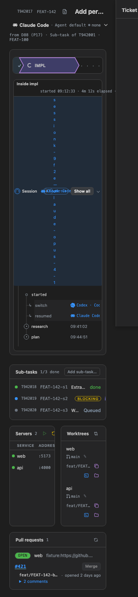

Responsive density — before / after
Spec: RESPONSIVE-DENSITY.md. Evidence: responsive-audit/README.md. Before = real dashboard screenshots (responsive-audit/dashboard-running/<width>.png, dark, scenario running). After = the spec'd dashboard ticket view per tier, rendered with real class names (.k-agent-core, .k-btn, .ticketTitle, .headerActions, .stepper, .session-head) and --k-* tokens. Each box below is its own container-type:inline-size region, so the page window width does not matter: the ladder follows the box. This page demonstrates the ladders in CSS only; the shipped primitives (ui:RD-PRIMITIVES) render them from the same container width.
Before: real views
1212 px — 1 group (ok)

600 px — title collapses to “A…”, session row overlaps

400 px — session row one character per line

320 px — sideways scroll (natural min 382)

After: spec'd ticket view per tier
T942017FEAT-142 Add per-repo base branch override to the worktree picker
PLANNINGIMPLEMENTATIONIMPLREVIEWSHIPIMPL · 3/7
●Claude CodeClaude Opus 4.1Opus 4.1session k-9f2e
core: icon + name + model · time: absolute · tokens exact · actions: all labelled
T942017FEAT-142 Add per-repo base branch override to the worktree picker
PLANNINGIMPLEMENTATIONIMPLREVIEWSHIP
●Claude CodeClaude Opus 4.1Opus 4.1session k-9f2e
mid: model shortened (
Opus 4.1) · date short · tokens 1.2M tok · priority-3 action → ⋯T942017FEAT-142 Add per-repo base branch override to the worktree picker
PLANNINGIMPLEMENTATIONIMPLREVIEWSHIP
●Claude CodeClaude Opus 4.1Opus 4.1session k-9f2e
narrow: header stacks (title first) · core = icon + name · secondary action icon-only · time
2h ago · tokens 1.2M · stage rail labels only the current stage (IMPL)T942017FEAT-142 Add per-repo base branch override to the worktree picker
PLANNINGIMPLEMENTATIONIMPLREVIEWSHIPIMPL · 3/7
●session k-9f2e
tight: core icon-only (name stays as accessible name, tooltip
Claude Code · Claude Opus 4.1) · primary + ⋯ only · time 2h · session row is two lines, never one character per line · dots + IMPL · 3/7 stage linePath, middle ellipsis (tight)
src/ui/dashboard/subdir/another/webview.html
file name never truncated; head ellipsises; full path in tooltip and
aria-label.